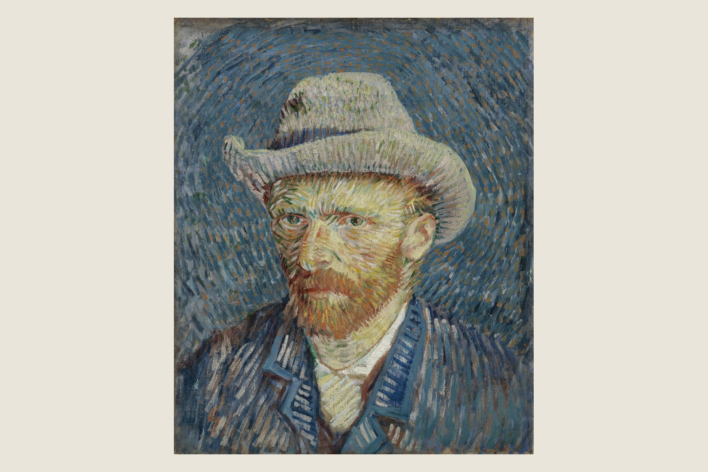
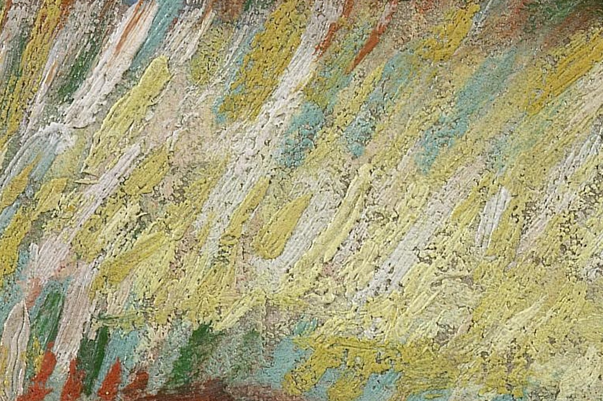
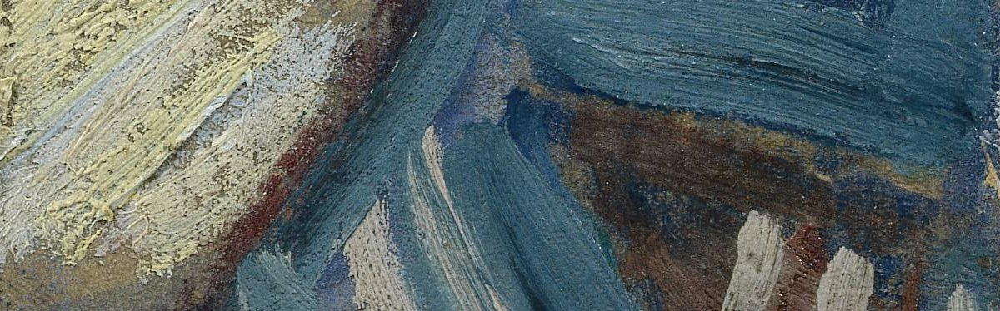

A physical record for every work of art
Art deserves a record as unique as the object itself.
ARcv is developing a digital documentation and provenance platform to help artists, collectors, galleries and cultural institutions document, manage and preserve information about artworks.


Why surface
A photograph remembers an image. A record remembers a work.
A painting is not flat. Oil paint dries in ridges a few hundred microns high. Canvas weave prints through the thin passages. Varnish keeps a history of every knock the panel has taken. A photograph loses all of it.
Two photographs of the same painting, a year apart, can look identical and tell a registrar nothing. The paint itself is harder to copy, and it is the part that belongs to one object rather than to its picture.
We are exploring how photogrammetry, 3D documentation and structured records can bring more precision to the way artworks are identified, measured and documented — and whether that makes a more reliable foundation for collection management, conservation and long‑term stewardship.
How a capture works
Twelve exposures, one lamp, no laboratory.
01 / Observe
Twelve shots, one moving light
A phone on a stand, a polarising filter, and a single lamp carried to six marked positions. Nothing in frame but the work — no wall, no neighbouring piece, no equipment.
02 / Measure
Surface, scale and colour
The sequence resolves into surface normals and a height field. Scale comes off a target in the first frame; colour off a checker in the same light as the work.

03 / Document
Evidence kept apart from claims
Numbers are stored separately from anything anyone asserts about them, with the capture conditions attached: which phone, which lamp positions, whether the rig was moved.
Where this stands
In development. These are test figures, not product claims.
Everything below comes from our own captures of a single painting. We publish the limits with the numbers because a measurement without its conditions is not worth much to a conservator.
- Method
- Cross‑polarised photometric stereo on a phone, for flat work
- Repeatability
- One pair, captured eleven minutes apart with the rig dismantled and rebuilt in between, agreed to 0.104% on scale
- Determinism
- The same frames produce bit‑identical numbers, so the spread above is the rig and not the code
- Not yet
- No detection threshold. A second capture can report that something changed; it cannot say whether that is damage, ageing or restoration
- Target
- 2027
About
Ramati Art Group has worked where art meets the technology used to look at it since 2018.
We started in Lagos in 2018 and work from New York. Most of what we have built sits between an artwork and the record somebody keeps of it — and for years that record was a photograph.
Photographs stopped being evidence. An image can be generated, edited, or aged convincingly enough that a picture of a painting now settles very little on its own. Paint is a harder thing to forge. You would have to reproduce the object.
A work is measured when it is made, and measured again when it changes hands. The difference between those measurements is the record.
ARcv is the instrument for taking those measurements. We built it around one person with a phone and a lamp they move by hand, because most work in the world will never be taken to a laboratory. Our testing so far is mostly one painting, captured over and over, with the rig taken apart and rebuilt between sessions to see whether the numbers hold.
They mostly hold. What the system still cannot do is tell you what a change means — that judgement stays with the conservator, the registrar and, occasionally, the court.
Adaramati Shogo · Founder, Ramati Art Group
Help us build this
We would like to hear from you.
We are connecting with people across the art world who understand the challenges of documenting and managing collections — artists, collectors, galleries, conservators and institutions — to understand their needs, validate our approach and shape something that works in practice.
Whether you manage a collection, represent artists, care for cultural objects or work with art institutions, your experience can help.
A private correspondence. One click to stop, at any point.
Noted.Your address has been noted.
Thank you. We’ll be in touch.